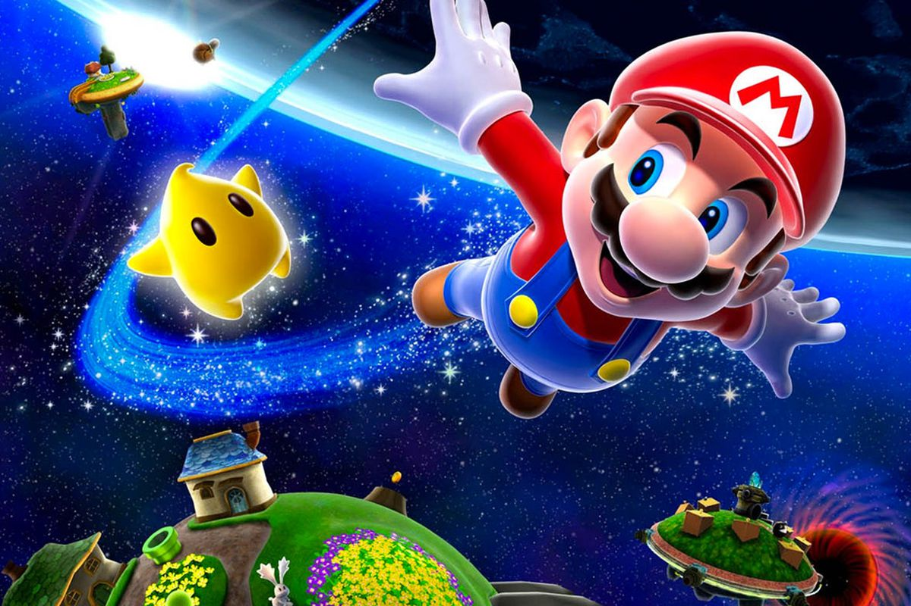

Characters
Some of the greatest characters from the Mario franchise are Mario, Luigi, Bowser, Princess Peach, Toad, and Yoshi. Below is an image of some more of the characters that have been added to the franchise and games over time. Mario Odyssey brought some new characters as well.

History
The first Mario game was released in 1985. The goal of the original Super Mario was to free the Mushroom Princess and restore the Kingdom of the Mushroom people. There have been 20 Mario games released since 1985. The most recent one was released in 2019.

Wii games
The first Mario games availiable on the Wii were Super Paper Mario and Super Mario Galaxy which were released in 2007. Other Mario games released on the Wii include: Super Mario Bros Wii, and Super Mario Galaxy 2

